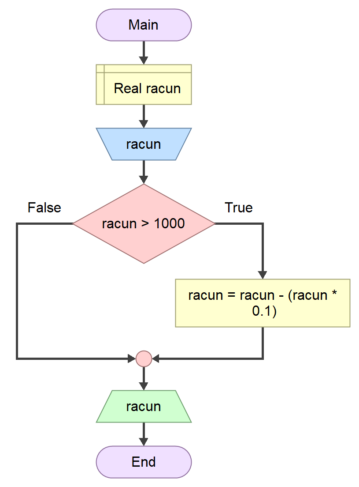

Наредба гранања¶
Наредбом гранања if можеш да контролишеш условно гранање у програму. Општи
облик наредбе if може да се представи са два облика. Први и најједноставнији
облик изгледа овако:
if (izraz)
naredbа
Прво се израчунава вредност израза izraz који може бити различит од нуле,
односно тачан, или једнак нули, односно нетачан. Ако је вредност израза
различита од нуле извршава се naredba, која може бити појединачна наредба
или блок наредби између витичастих заграда.
Сложенији облик наредбе гранања if-else изгледа овако:
if (izraz)
naredbа_1
else
naredbа_2
Овде izraz представља логички услов који може бити тачан, односно различит од
нуле, или нетачан, односно једнак нули. naredbа_1 и naredbа_2 могу бити или
појединачне наредбе које се завршавају симболом ; или блокови наредби
сачињених од појединачних наредби записаних између витичастих заграда.
Напиши алгоритам и програм у програмском језику C који израчунава коначни износ који Алиса треба да плати у продавници, ако важи правило да се за куповину већу од \(1000\) динара одобрава попуст од \(10\%\). На стандардни улаз уноси се реалан број двоструке прецизности који представља цену артикала које је Алиса купила. На стандардни излаз исписује се број двоструке прецизности заокружен на две децимале који представља коначан износ рачуна.
Алгоритамско решење овог задатка представљено дијаграмом тока може да изгледа овако:
{kind=link}
а програм у програмском језику C овако:
#define _CRT_SECURE_NO_WARNINGS
#include <stdio.h>
int main(void)
{
double racun;
scanf("%lf", &racun);
if (racun > 1000)
racun = racun - (racun * 0.1);
printf("%.2lf", racun);
return 0;
}
Ако се на стандардни улаз унесе број који није већи или једнак од \(1000\), онда
ће логички израз racun > 1000 бити нетачан, односно једнак нули, па се грана
racun = racun - (racun * 0.1) неће извршити. На стандардном излазу ће се
исписати само унети број. На пример:
850
850.00
Међутим, ако се на стандардни улаз унесе број већи од \(1000\), онда ће логички
израз racun > 1000 бити тачан, односно једнак јединици, па ће се грана
racun = racun - (racun * 0.1) извршити. Након тога, на стандардном излазу ће
се исписати унети број умањен за \(10\%\). На пример:
1250
1125.00
Пошто се у грани налази само једна наредба, нема потребе за коришћењем витичастих заграда, али није грешка уколико их напишеш. Значи, наредба гранања:
if (racun > 1000)
racun = racun - (racun * 0.1);
је еквивалентна овој наредби:
if (racun > 1000)
{
racun = racun - (racun * 0.1);
}
Такође, не треба да те буни ако наиђеш на овакав стил навођења витичастих заграда:
if (racun > 1000) {
racun = racun - (racun * 0.1);
}
Реч је само о стилу, док је функционалност непромењена. Исту наредбу гранања можеш записати у једној линији, али се због прегледности то не препоручује:
if (racun > 1000) racun = racun - (racun * 0.1);
Како би што успешније савладао наредбу гранања и наредбе које ћеш учити
касније, обрати пажњу на један детаљ код којег почетници често греше, а то је
коришћење знака ;. Наредба гранања је сложена извршна наредба и не завршава
се одмах након навођења израза, него након наредбе у грани, односно
појединачних наредби у блоку. Неисправно је:
if(izraz); if(izraz); if(izraz)
naredba_1; { {
naredba_1; naredba_1;
naredba_2; naredba_2;
... ...
naredba_n; naredba_n;
} };
а исправно:
if(izraz) if(izraz)
naredba_1; {
naredba_1;
naredba_2;
...
naredba_n;
}
Напиши алгоритам и програм у програмском језику C који на стандардни излаз
исписује апсолутну вредност унетог целог броја, ако је дато ограничење да не
смеш да користиш библиотечку функцију abs().
Алгоритамско решење овог задатка представљено дијаграмом тока може да изгледа овако:
{kind=link}
Програм у програмском језику C може да изгледа овако:
#define _CRT_SECURE_NO_WARNINGS
#include <stdio.h>
int main(void)
{
int broj, apsolut;
scanf("%d", &broj);
if (broj >= 0)
apsolut = broj;
else
apsolut = -broj;
printf("%d", apsolut);
return 0;
}
Ако се на стандардни улаз унесе број који је већи или једнак од \(0\), онда ће
логички израз broj >= 0 нетачан, односно једнак \(1\), па ће се извршити if
грана apsolut = broj. На стандардном излазу ће се исписати само унети број,
без промењеног знака. На пример:
5
5
Ако се на стандардни улаз унесе негативан број, онда ће
логички израз broj >= 0 бити нетачан, односно једнак \(0\), па ће се извршити
else грана apsolut = -broj. Након тога, на стандардном излазу ће се
исписати унети број са промењеним знаком.На пример:
-5
5
Често, логички израз може бити састављен од већег броја услова међусобно повезаних логичким операторима.
Напиши алгоритам и програм у програмском језику C који на основу унетог броја година ученика, на стандардни излаз исписује да ли је ученик тинејџер или није. Ученик је тинејџер ако има више од 12 и мање од 20 година.
Алгоритамско решење овог задатка представљено дијаграмом тока може да изгледа овако:
{kind=link}
Програм у програмском језику C може да изгледа овако:
#define _CRT_SECURE_NO_WARNINGS
#include <stdio.h>
int main(void)
{
int godine;
scanf("%d", &godine);
if (godine > 12 && godine < 20)
printf("Jeste tinejdzer");
else
printf("Nije tinejdzer");
return 0;
}
Ако се на стандардни улаз унесе број који задовољава оба услова godine > 12 и
godine < 20 на стандардном излазу исписаће се Jeste tinejdzer, односно, ако
унети број не задовољава оба услова исписаће се Nije tinejdzer. На пример:
15
Jeste tinejdzer
или
10
Nije tinejdzer
Једна управљачка if-else структура може у себи садржати једну или више
угнежђених if-else структура.
if (izraz_1)
naredba_1
else
if (izraz_2)
naredba_2
else
naredba_3
Напиши алгоритам и програм у програмском језику C који на стандардни излаз исписује у којем се агрегатном стању налази вода, ако се на стандардни улаз уноси температура воде у степенима целзијуса, као број двоструке прецизности.
Алгоритамско решење овог задатка представљено дијаграмом тока може да изгледа овако:
{kind=link}
Програм у програмском језику C може да изгледа овако:
#define _CRT_SECURE_NO_WARNINGS
#include <stdio.h>
int main(void)
{
double t;
scanf("%lf", &t);
if (t <= 0)
printf("cvrsto");
else
if (t >= 100)
printf("gasovito");
else
printf("tecno");
return 0;
}
Ако се на стандардни улаз унесе број мањи или једнак нули, логички израз
t <= 0 биће тачан па ће се извршити if грана и на стандардни излаз исписати
cvrsto, а ако није, логички израз t <= 0 биће нетачан па ће се извршити
else грана у којој се налази угнежђена if-else наредба.
У угнежђеној if-else наредби логички израз t >= 100 биће тачан ако је унети
број већи или једнак од сто, па ће се извршити if грана и на стандардни излаз
исписати gasovito, а у супротном, логички израз t >= 100 биће нетачан, па
ће се на стандардни излаз исписати tecno.
У овом задатку нема потребе да испитујеш тачност трећег логичког израза
t > 0 && t < 100 који важи за течно стање воде, јер, ако унети број није мањи
или једнак од нуле или већи или једнак од сто, онда је сигурно већи од нуле и
мањи од сто.
На пример:
-10
cvrsto
или
10
tecno
или
110
gasovito
Пошто је else грана опциона, значи да у угнежђеним структурама може бити више
if него else грана. Због тога требаш да обратиш пажњу на коју се if грану
односи која еlse грана. Уколико није означено витичастим заградама, else
грана се увек односи на последњу претходећу неупарену if грану. У овом
случају:
if (izraz1)
if (izraz2)
naredba_1
else
naredba_2
else грана се односи на другу if грану, док се у овом:
if (izraz1)
{
if (izraz2)
naredba_1
}
else
naredba_2
else грана односи на прву if грану.
Увлачење односно назубљивање кода (енгл. indentation), у програмском језику C
има искључиво естетску улогу, па погрешно назубљене if-else наредбе могу да
преваре и искусне програмере. Добра програмерска пракса је да, без обзира што
увлачење редова не утиче на функционалност програма, увек треба да увлачиш блок
наредби if и else грана. Такође, увек треба користити исти размак за
увлачење, без обзира да ли га реализујеш помоћу четири узастопне празнине или
помоћу табулатора.
Ради лакшег разумевања програма често се користи и else-if запис који може да
учини програм прегледнијим, али не утиче на његову функионалност:
if (izraz_1)
naredba_1
else if (izraz_2)
naredba_2
else
naredba_3
У програмском језику C нема ограничења у дозвољеном броју угнежђавања if-else
наредби, али постоји елегантније решење коришћењем наредбе вишеструког гранања
switch-case, која ће бити тема у наредним лекцијама.